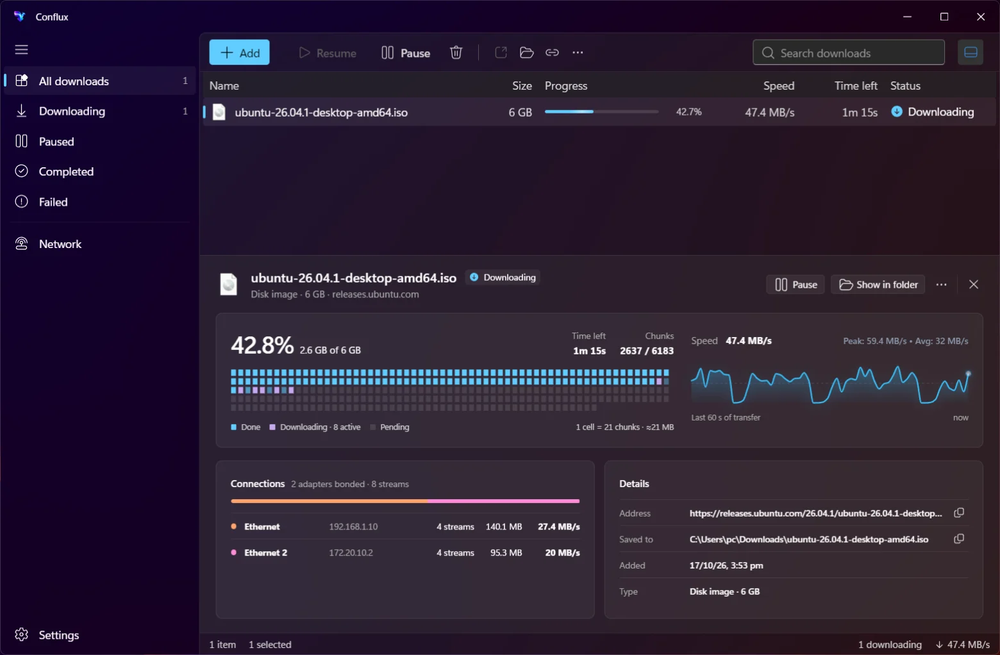

Channel bonding
Every adapter fetches its own byte ranges at once. Faster links take more of the file automatically.
Windows 10/11 · Free & open source · Beta {{VERSION}}
Conflux bonds your Wi-Fi, Ethernet and phone tethering into a single download, so big files use all the bandwidth you already have. If one drops, the rest keep going.
Download for WindowsConflux follows your Windows theme, or you pick one. Turn on Mica, Mica Alt or Acrylic and your wallpaper shows through, like the apps built into Windows 11.

Screenshots of Conflux on Windows 11. Window materials need Windows 11; Mica Alt and Acrylic need 22H2 or later.
Pick a file and tell it what you have. Estimate: combined speed × 0.9 for overhead, with independent links and a server that allows ranged downloads.
Big game
—
your fastest link alone
—
—
Simulation only: illustrates multi-link chunk scheduling; no real files or data are downloaded.
Switch connections off mid-download. Their chunks move to the links that are still up, and the file is never corrupted. A simulation of what the app does.
Every adapter fetches its own byte ranges at once. Faster links take more of the file automatically.
Plug in a phone mid-download and it joins. Unplug it and its work moves to the others.
Progress is saved as you go, so a crash or a reboot doesn't mean starting over.
Strict range validation and change detection. A file that changed on the server is caught.
No telemetry, no accounts. It only talks to the servers you download from, and GitHub for updates.
Updates are signature-checked. Running downloads pause before installing and resume after.
Hand off downloads straight from your favorite browser into Conflux for multi-interface speed. If a connection drops, the rest keep streaming without corruption.
Right-click any link or automatically intercept large downloads. Passes Referer and User-Agent headers with zero background daemons.
Code-signing certificates cost money and need identity checks, so the beta isn't signed yet, and SmartScreen warns about every unsigned installer. Click More info → Run anyway. Download only from this page or GitHub Releases, then compare the output of
Get-FileHash .\Conflux_*_x64-setup.exe -Algorithm SHA256
with the SHA256SUMS.txt from the same release.
Free and open source (MIT or Apache-2.0). It collects nothing. Read the privacy statement.
Windows 10 or 11, 64-bit, and Microsoft WebView2, which current Windows already has. The standard installer fetches it if it's missing, or use the offline installer.
Up to the sum of your connections minus some overhead, when the server allows ranged downloads and your links are independent. Two adapters on the same router share that router's speed. Try the calculator.
Bugs: open an issue and paste Settings → Copy diagnostics. Security problems: please follow the security policy instead.